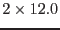

| NotOverlapping | error |
| | One or more pointings do(es) not overlap with any other input pointing (maximum distance between image centers: arcmin).
|
| FileMismatch | error |
| | Number of input event lists does not match number of input attitude files.
|
| ParameterError | error |
| | Unknown value of a parameter.
|
| ParameterMismatch | error |
| | Conflict between input parameters (explained in the error message).
|
| ParameterCountMismatch | error |
| | Number of upper energy-band boundaries does not match number of lower energy-band boundaries.
|
| CIFMissing | error |
| | Environment variable SAS_CCF is not set.
|
| FileNotFound | error |
| | Could not open input file. File not found or unreadable.
|
| FileNotCopied | error |
| | Could not copy the file to the desired location.
|
| KeywordMissing | error |
| | Mandatory keyword not found in the header of an input file.
|
| EmptySourceList | error |
| | Input source list to emldetect is empty.
|
| TaskError | error |
| | Task called by edetect_stack ended in error.
|
| KeywordMismatch | warning |
| | Header keywords of input files are not consistent. Products of the following tasks may be incorrect.
corrective action: Check input/output files.
|
| KeywordNotChanged | warning |
| | Header keyword could not be changed.
corrective action: Check order and headers of input files.
|
| ImageNotFound | warning |
| | An image file that should have been created or input is missing.
corrective action: Check files and image size / reference coordinates.
|
| InstrumentIgnored | warning |
| | All images for an instrument are empty in an input pointing.
corrective action: Respective file names are removed from the list of input images
|
| PointingIgnored | warning |
| | A pointing is not overlapping with the analysis region.
corrective action: No further processing of the corresponding files.
|
| EmptySourceList | warning |
| | Intermediate eboxdetect source contains no detections.
corrective action: Skipping it.
|